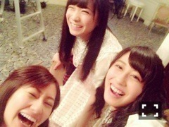

| 2014/12 18 Thu | クリスマスライブ！ 涙頃。(´>∀<｀)ゝ |
ちはるーむへようこそ\( ˆ ˆ )/♡

有明コロシアムでの
Merry Christmas Show2014
すごく楽しかったです！
赤と青のサイリウムを振ってくれた皆さん、
タオルや、うちわを持ってくれた皆さん、
見つけましたよ〜♡
ありがとう(﹡ˆ ˆ﹡)
来てくださった皆さん、
ありがとうございました\( ˆoˆ )/
いつもと違ったライブで、
見せるタイプのショー形式だったんですけど、
どうでしたか？
感想を教えてください♪
クリスマスライブということで、
有名なクリスマスソングを歌わせていただきました！
大好きな曲ばかりで、
歌っていて楽しかったです♡
特に、Let It Goはメンバー公認、
私の大好きソングなので
ちーちゃんソロで歌ってほしかった！
って言われました。
照れました。笑
そして、見どころはやはり
カップリング曲！！
私が歌ってた曲に投票してくださった皆さん！
ありがとうございましたヽ(；；)丿
たくさんの曲に思い出があるんですけど、
4位に入った
「涙がまだ悲しみだった頃」についてお話しします。
この曲は、3rdの時のアンダー曲で、
メンバーみんな何を頑張ったらいいか、模索中の時の曲です。
海辺での撮影や、日本家屋みたいな楽屋、沖縄のような路地。
MVにはたくさんの思い出があります。
あったかいんだけど風が吹くと寒くて、
みんなで毛布をかぶって撮影を待ったりしたのを鮮明に覚えています。
でも、何より、この曲は先日卒業してしまった、
寧々がセンターを務めた曲です。
その曲が、こうして4位に入ったこと。
ライブでは、相方の万理華がセンターをしたこと。
すごく嬉しくて感慨深いです。
思わず涙が出そうになりました。
ピンクとオレンジのサイリウム、
綺麗だったなあ。。
寧々も嬉しかったと思います(´;_; `)
アルバムに入る大事な曲の中に
この曲が選ばれたこと。
素敵だなあ。嬉しいなあ。
本当にありがとうございます！
涙頃のころの、私。
なんか幼い！若い！
成長したかなー？？
そして、今日は撮影してきました！
楽しかったな(﹡ˆ ˆ﹡)
発売をお楽しみに！！
1stから8thまで、同じアンダーとして、
一緒にがんばってきたね。
辛かったね。
でも、9thでとまとが選ばれたとき、
素直に嬉しかったよ。
ずっと忘れないよ。
お疲れ様でした。
ありがとう。

真夏、ニャンちゅうみたい。。笑
最近、真夏をいじってるちーちゃんが大好きなの！って
まいまいが爆笑しながら言ってきました。笑
まいまいが笑ってくれるなら
真夏を、これからもいじります。笑
(ごめんね♡真夏♡)
ばいるんっ
るんるんっ
ちはるんっ
(´>∀<｀)ゝ
コメント(302)
2014/12/18 00:00